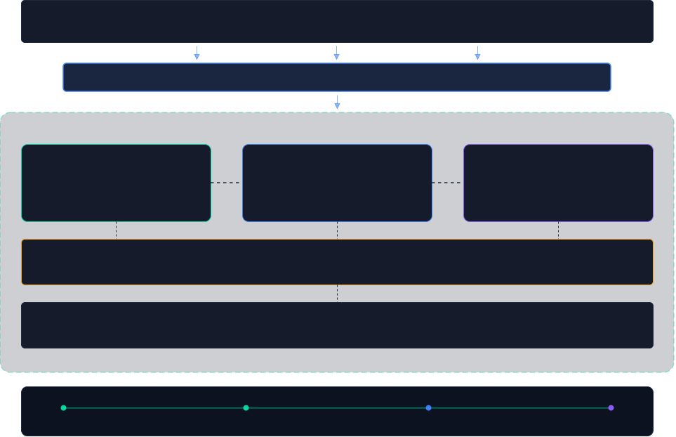

Activate Data Brain
Agent-Native Semantic Storage — ingest, understand, remember, and audit. One unified engine from document to decision, with hybrid retrieval, reranking, and full causal-chain traceability.
AI agents need more than a vector database. They need a storage engine that speaks their language — natively.
Not retrofitted for agents — built from day one as the data layer agents think through. Semantic processing, memory, and audit are first-class primitives, not plugins.
Beyond vector search. Documents are parsed, chunked, embedded, and indexed in a unified semantic layer — queryable by meaning, not just keywords.
Architectured for petabyte-to-exabyte workloads from the ground up. Horizontal scaling, namespace isolation, and storage tiering are native — not afterthoughts.
Cortrix consolidates semantic ingestion, hybrid retrieval with reranking, interaction memory, and causal-chain audit into a single engine with REST, MCP, and SDK interfaces.
Ingest any document — PDF, Word, Markdown — through an automated pipeline: Docling parsing with OCR fallback, parent-child chunking, NER + summary enrichment, embedding, and indexing in one step.
CoreVector similarity (P-HNSW with WAL persistence) + BM25 keyword search fused via RRF, then precision-reranked with bge-reranker-v2-m3 — for best-in-class retrieval accuracy.
CorePersistent conversation memory with session management, LLM-based fact extraction, typed memory (fact / preference / event) with decay, per-user isolation, transparency APIs, and full audit trail.
CoreSession, trace, and agent headers flow end-to-end. Retrieval feedback captures which chunks actually helped — every chunk accumulates a useful_ratio score that quietly reranks future results. Your storage gets smarter with every query, no retraining required.
Open-source content-level provenance, not just call indexes. Every answer links back to the exact chunks, documents, and conversation turns that produced it — built-in citation tracing, retrieval attribution, and reasoning chain for debugging and trust.
CoreIsolate data by project, team, or tenant with independent storage and indexes. Query across any subset of namespaces in parallel via scatter-gather, with reranker-unified ranking.
CoreParent-Child chunking for precision + context, Contextual Retrieval for chunk disambiguation, RAG-Fusion multi-query, CRAG retrieval grading, and HyPE hypothetical-question indexing — built in, not bolted on.
CoreSemantic storage as a PostgreSQL extension. Bring agent-native capabilities directly into your existing Postgres infrastructure — no separate service needed.
IntegrationModel Context Protocol server exposes Cortrix capabilities to Claude Code, Cursor, and any MCP-compatible AI tool out of the box.
IntegrationONNX Runtime integration with bge-m3 model for multilingual embeddings. No external embedding service needed.
Built-inPlug into LangChain, Dify, RAGFlow, and any MCP/CLI/REST workflow. Connectors for HTTP upload, directory watch, DB import, and custom data sources.
Ecosystempip install cortrix for type-safe Python clients, a clean HTTP API for any language, and a built-in dashboard for document management, search, and AI chat.
A vertically integrated engine — from document ingestion to hybrid retrieval with reranking to causal-chain audit — designed for PB-scale agent workloads.

Deploy via docker-compose one-command stack, standalone server, or pgcortrix PostgreSQL extension — whatever fits your stack.
Retrieval feedback closes the loop: each chunk accumulates a useful_ratio based on what actually helped the agent, quietly lifting relevance over time — no fine-tuning, no extra pipeline.
Native integration with LangChain, Dify, RAGFlow, MCP, and CLI. Plus HTTP upload and filesystem watchers.
From zero to semantic search in three commands.
docker pull cortrix/cortrix:latest
docker run -d -p 8080:8080 --name cortrix cortrix/cortrix:latestcurl -X POST http://localhost:8080/api/v1/documents/upload \
-F "file=@your-document.pdf" \
-F "namespace=default"curl -X POST http://localhost:8080/api/v1/query \
-H "Content-Type: application/json" \
-d '{"query": "How does authentication work?", "namespace": "default"}'Or use the Python SDK:
pip install cortrix
from cortrix import Client
client = Client("http://localhost:8080")
client.documents.upload("your-document.pdf", namespace="default")
results = client.query("How does authentication work?", namespace="default")Cortrix is the data backbone for autonomous AI agents — not coding assistants, but agents that run real business processes.
The next wave of AI agents — like OpenClaw — need persistent semantic memory and auditable decision trails. Cortrix provides both natively.
Full causal-chain traceability for AI workers. Every decision, every data source, every reasoning step — stored and retrievable at content level, not just index level.
Integrate with LangChain, Dify, RAGFlow, and any MCP/CLI-based workflow. Cortrix acts as the semantic layer your orchestrator reads and writes to.
From PostgreSQL (pgCortrix) to standalone engine — deploy semantic storage wherever your data lives. CDC connectors keep everything in sync.
A unified engine vs. assembling pieces.
| Capability | Cortrix | Vector DB + RAG Framework |
|---|---|---|
| Document Ingestion | Built-in SPC pipeline | Separate parser + chunker |
| Embedding | Built-in (bge-m3, ONNX) | External API call |
| Vector Search | P-HNSW, in-process | Separate vector DB |
| Keyword Search | FTS5 + BM25 | Often missing or separate |
| Hybrid Fusion | RRF built-in | Custom glue code |
| Reranker | bge-reranker-v2-m3 built-in | External service or missing |
| Cross-Namespace Query | Scatter-gather + unified ranking | Client-side orchestration |
| Advanced RAG | Parent-Child / Contextual / CRAG / HyPE | DIY or framework plugins |
| AI Memory | Typed memory with decay + LLM extraction | Not included |
| Causal-Chain Traceability | Content-level citation tracing | Index-level only (if any) |
| Agent Observability | Session / trace / feedback signals | Not included |
| Self-Learning Retrieval | useful_ratio feedback · no retraining | Not included |
| PostgreSQL Integration | pgCortrix extension | Separate service |
| Workflow Connectors | LangChain / Dify / RAGFlow / MCP | Framework-specific |
| MCP Server | Built-in | Not available |
| Scale Target | PB ~ EB native | GB ~ TB typical |
| Deployment | Single binary / Docker / PG ext | Multiple services |
Cortrix is open source and community-driven. We welcome contributions of all kinds.